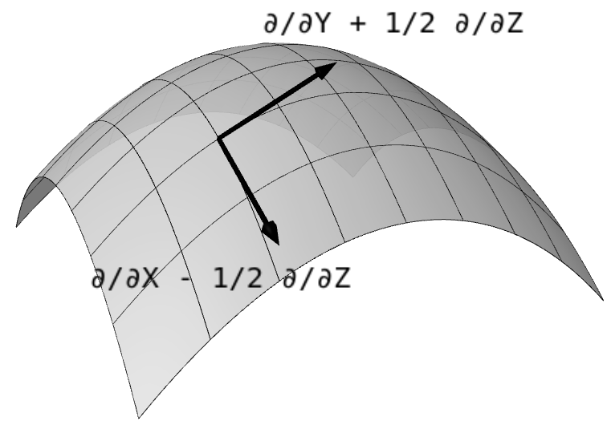

Introduction to differentiable manifolds in SageMath
by Andrzej Chrzeszczyk
|  | image generated by notebook 8 |
- Basic notions of topology
- Examples of charts. Cartesian and spherical coordinates
- Function graph as a manifold
- Spheres as manifolds
- Spheres and spherical coordinates in higher dimensions
- The notion of module
- Smooth functions and pullbacks
- Tangent spaces
- a. Tensors on modules
- Tensors on TpM
- Alternating forms on modules
- Vector fields
- Vector fields - continuation
- Tensor fields
- Differential k-forms
- Pulback of tensor fields
- Exterior derivative
- One-parameter groups of transformations
- Integral curves
- Lie derivative
- Integration of differential forms on singular k-cubes
- Connection
- Riemannian and pseudo-Riemannian manifolds
- Curvature
- Riemannian curvature tensor of type (0,4)
- Torsion and curvature forms